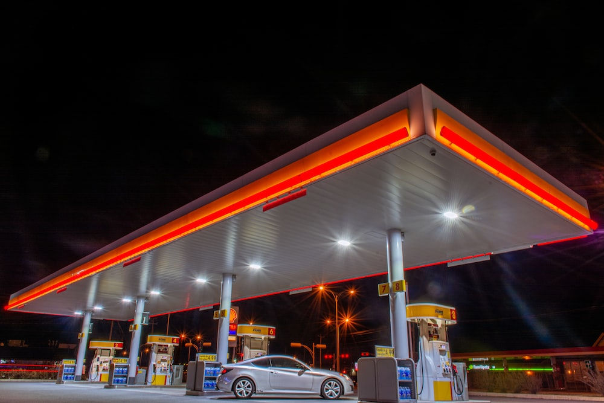

Material care stochează energie ce poate fi eliberată ulterior prin diverse reacții chimice pentru obținerea căldurii sau efectuarea de lucru mecanic.
Din punct de vedere chimic , combustibilii sunt materiale care prin reacția chimică cu alte substanțe eliberează energia stocată în structură sub formă de căldură sau care poate fi utilizată ca lucru mecanic.
În industria energetică prezintă importanță combustibilii energetici, la care căldura degajată prin ardere poate fi utilizată avantajos din punct de vedere tehnico-economic.
Tipuri de cobustibili auto uzuali:
- Benzina
- Motorina (Diesel)
- GPL (Gaz Petrolier Lichefiat)
Benzina
Benzina 95 este un carburant de cea mai buna calitate, ceea ce face ca acest tip de carburant sa fie special, este compozitia sa echilibrata, cu un continut scazut de sulf (mai putin de 10 ppm), ceea ce aduce multe beneficii si il face foarte convenabil in utilizare.
Benzina Premium este destinata atat vehiculelor de ultima generatie cat si celor mai vechi. Avantajul sau principal este ca asigura o aprindere mai rapida a motorului si o mai buna reactie la acclerare.
In comparatie cu Benzina 95, Benzina Premium are o cifra octanica mai mare, care ofera motorului mai multa putere, randament crescut si functionare imbunatatita.
- Valoare octanica crescuta
- Performanta sporita a vehiculului
- Timp de combustie redus
- Randament crescut
- Functionare mai stabila a motorului
- Putere mai mare si flexibilitate imbunatatita a motorului
Cifra octanica
Cifra octanica defineste calitatea carburantului si arata rezistenta acestuia la detonare in combustie. Este important sa retineti faptul ca o cifra octanica mai mare inseamna o rezistenta mai buna.
- Reduce riscul de detonare in combustie
- Protejeaza motorul
- Prelungeste durata de viata a motorului
- Reduce consumul de carburant
- Reduce emisiile poluante
- Creste puterea motorului
Motorina
Motorinele sunt combustibili petrolieri formați din amestecuri de hidrocarburi cu 12 până la 20 de atomi de carbon în moleculă, obținute din distilarea primară a petrolului în domeniul de temperatură de 220 – 360 ºC.
Motorina are avantajul că necesită mai puțină rafinare, fiind astfel mai ieftină decât benzina. De asemenea, este un combustibil mult mai sigur în exploatare deoarece, spre deosebire de benzină, motorina se aprinde mai greu decât benzina.
Carburantul Premium diesel din statiile Gazprom are mai multe beneficii care deriva din continutul scazut de sulf si pachetul inovativ de aditivi conceput special pentru vehicule pe motorina
- Performanta imbunatatita a motorului prin combustie mai eficienta, datorita protectiei impotriva uzurii, corziunii si acumularii de sediment pe injectoare
- Confort sporit in timpul condusului datorat functionarii mai silentioase si mai constante a motorului, mai ales in conditii de iarna
- Protectia mediului inconjurator, datorita emisiilor reduse de gaze
GPL
GPL-ul auto este cel mai cunoscut combustibil alternativ din întreaga lume, fiind utilizat de mai multe decenii. Acesta este compus din propan, butan sau un mix al acestora. Beneficiile sale sunt costul redus de achizitie, precum si cantitatea redusa de emisii. GPL-ul auto este un carburant ecologic, care arde in totalitate datorita compozitiei sale, fara a produce miros, fum sau mici particule in atmosfera, prelungind din acest motiv viata motorului.
Datorita raspandirii sale si popularitatii din ultimii ani, GPL-ul auto, numit si LPG sau autogaz, a devenit un produs indispensabil. În Romania există deja peste 800 de staţii de GPL auto, numite si instalatii de tip skid. Multe dintre companiile de transport public sau companiile de taxi si-au echipat flotele auto cu instalatii pe GPL, acestea fiind o alternativa mai ieftina si ecologica fata de carburantii clasici benzina si motorina. In industrie tot mai multe motostivuitoare ruleaza pe GPL auto.
Beneficii:
- Parcurgerea de distante lungi fara alimentare, datorita celor doua rezervoare de benzina si GPL
- Reducerea costurilor de combustibil de cca. 30%
- Exploatare în condiţii de siguranţă mai ridicate decat la masinile pe benzina sau motorina
- Perioada de amortizare scurta a investitiei cu echiparea pe GPL
- Motorul functioneaza mai silentios pe GPL decat pe benzina